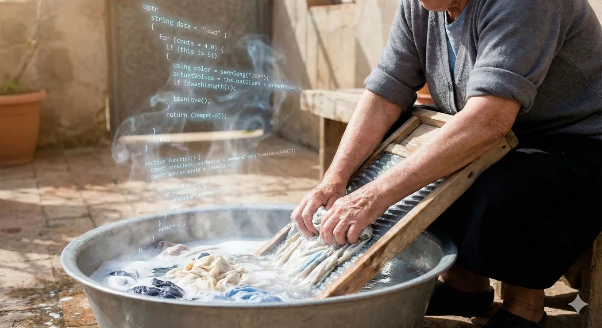

Kids will see hand-written code as ancient history
Originally posted on LinkedIn, December 30, 2025.
Do you know anyone who washes clothes by hand, with a washboard and soap? It sounds ridiculous. Who does laundry without a washing machine anymore? That is how kids will look at those of us who developed software before 2025, when people actually wrote the code themselves.
My 9-year-old son had an assignment from his English teacher to memorize words for a test. I suggested that we build a memory game with Gemini. We explained what we wanted and entered the words, then watched it create the code and the game in front of us.
I tried to explain what code is, now that computers can generate it themselves. I felt like an old man explaining that people once sent telegrams, made calls on a wired Bezeq phone, or looked things up in an encyclopedia at the municipal library.
Writing code has suddenly joined records, CDs, floppy disks, DOS, and Windows in the history books. Looking back, it always seems strange that people once did these things themselves.
I hope I live to see an era when nobody drives a car themselves, not just one without manual transmission.
Here’s to the future. 🥂
